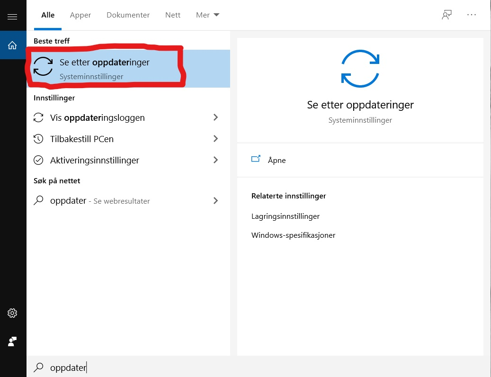
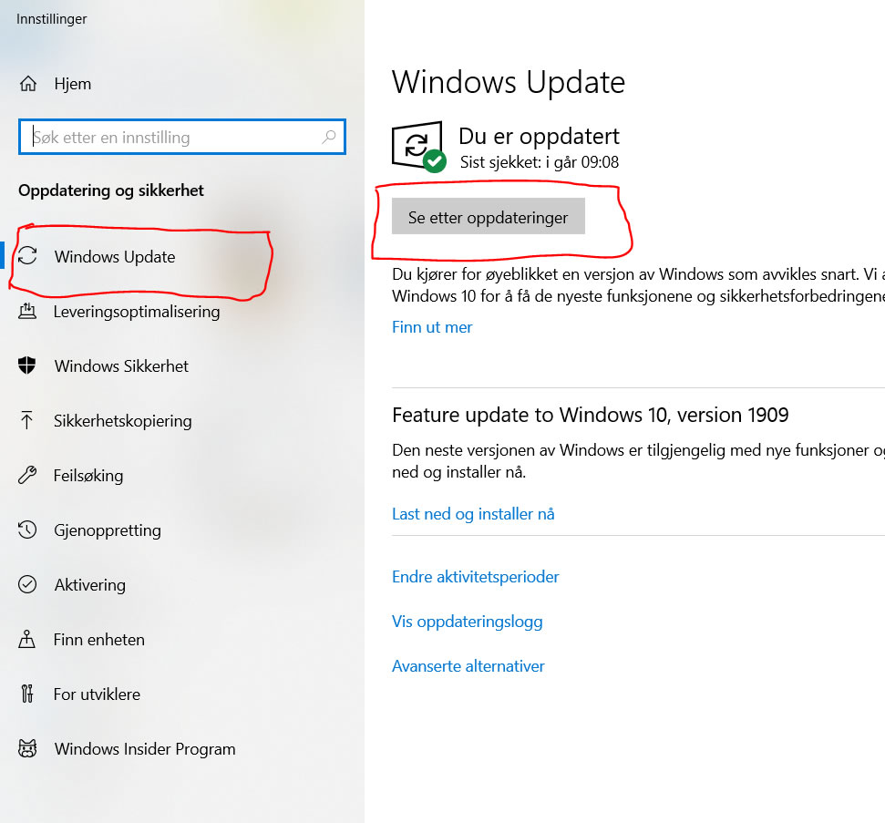
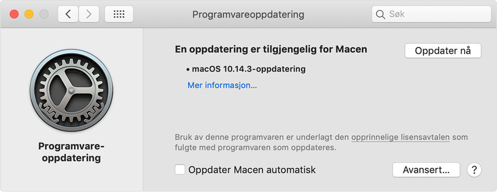

Slik gjøre oppdatering på Windows og Mac



Windows-Velg søk-knappen nede til høyre.
valg Se etter oppdatering.
Velg Windows Update-kategorien i sidefeltet (Sirkulære piler)
Velg Kontroller for oppdateringer.
Hvis det er en tilgjengelig oppdatering,
vil den starte nedlastingen automatisk. Dette oppdatering gjøres for programvare og.
Velg Systemvalg på Apple-menyen ,
og klikk deretter på Programvareoppdatering for å se etter oppdateringer.
Hvis det finnes tilgjengelige oppdateringer, klikker du på Oppdater nå-knappen for å installere dem.
Eller klikk på Mer informasjon for å se detaljer om
hver oppdatering og velge bestemte oppdateringer å installere.
Når Programvareoppdatering sier at Macen er oppdatert,
er den installerte versjonen av macOS og alle appene også oppdatert.
Det inkluderer Safari, iTunes, Bøker, Meldinger, Mail, Kalender, Bilder og FaceTime.
tilbake til hovedsider